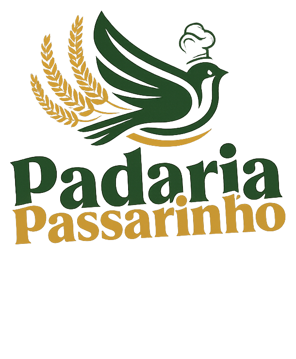

Padaria Passarinho
Pão saindo do forno, doce na vitrine e café passado na hora.
Todo dia, desde bem cedo. Tapera da Base, Floripa.
Desde cedo, todo dia
Uma padaria de bairro que
capricha em cada detalhe.
A gente abre às 5h30 com o pão ainda quente. Do café da manhã ao lanche da tarde, é tudo feito aqui — no capricho, do jeito que a gente serviria em casa.
Bolos por encomenda
Para o dia que
pede bolo.
R$ 79,90/kg. Você escolhe o sabor e a gente faz sob encomenda — com pelo menos 2 dias de antecedência.
Torta da Casa
morango, nata e 4 leites
Torta Mineira
4 leites, abacaxi e coco
Dois Amores
brigadeiro branco e meio amargo
Torta Tentação
chocolate preto com morango
Marta Rocha
baba de moça, nozes, damasco e nata
Floresta Negra
chocolate, chantilly e cerejas
Sabores personalizados sob consulta · sinal de 50% para confirmar o pedido · sem devolução em caso de desistência.
Encomendar um boloSobremesas
A vitrine que faz
você mudar de ideia.
Fatia generosa ou doce inteiro pra levar. Tem todo dia, e muda conforme a fornada.


Também na vitrine: bombom de morango, bombom de uva verde, pudim da casa e mousse de maracujá.
Caseirinhos & sonhos
Aquele docinho
do meio da tarde.
Sonho de morango recheado na hora, donuts do dia e bolinhos caseiros pra acompanhar o café.


Lanches naturais
Fome de verdade,
sem peso.
Sanduíche no pão de grãos, croissant recheado na hora e wrap de frango. Pra comer ali ou levar.

Tortas geladas
Torta na medida
da ocasião.
Tortas geladas montadas por encomenda — de chocolate com Oreo a mousse de dois sabores. Escolha o tamanho e a data, a gente cuida do resto.
Encomendar uma tortaFeito à mão, aqui mesmo
O cuidado que você sente
no primeiro pedaço.
Massa que descansa, forno no ponto e mão de quem faz com gosto. Nada sai daqui no automático.
Quem faz
Duas mulheres,
uma padaria.
A Passarinho nasceu da vontade de ter um lugar da vizinhança, com gosto de comida de casa. São elas que levantam antes do sol pra fazer o pão de cada dia — e que atendem você no balcão.
220 avaliações no Google
A nota de quem já tomou café aqui.
Venha tomar café
A gente te espera.
Endereço
R. José Olímpio da Silva, 108
Tapera da Base · Florianópolis – SC · 88049-500
Horário
Segunda a sábado · 5h30 às 20h
Domingo · 5h30 às 12h
Telefone
(48) 3500-0458